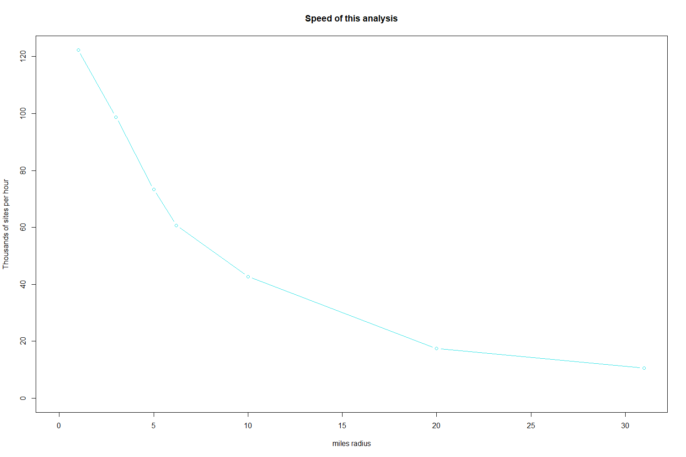

EJAM includes the EJAMejscreen package, a set of functions and data that facilitate access to EJScreen data and reports, using the API provided by EJScreen. It does a few things:
- API wrapper: Makes it easier to use the EJScreen API from R
- Batch processor: Includes a function that lets you obtain a batch of EJScreen results via API, assembled in a table.
- Web App: Provides a shiny R web app interface that helps you use the batch tool. This provides access to the EJScreen API in a loop or batch mode. It uses EJScreen to run reports on multiple places one at a time, so it is somewhat slow for more than a handful of places, but exactly replicates EJScreen results.
- Web Module: EJAM will include a shiny module within EJAM’s web app UI, that provides access to both in one place.
Get one EJScreen report in your web browser
This works best for one site at a time, and does not provide results in a table, just a formatted web page EJScreen Community Report directly from EJScreen.
# Browser opens to view one site report
browseURL(
url_ejscreen_report(
lon = -92.380556,
lat = 31.316944,
radius = 3
)
)
# Get the URL for each site report
url_ejscreen_report(
lon = testpoints_10$lon,
lat = testpoints_10$lat,
radius = 3
)
# Open each webpage in a browser
for (i in 1:2) {
browseURL(url_ejscreen_report(
lon = testpoints_10$lon[1:2],
lat = testpoints_10$lat[1:2],
radius = 3)[i])
}Get EJScreen results tables in RStudio (in tables, for a list of sites)
In RStudio, you can use EJAM’s EJScreen API code like this:
# To interactively pick your own spreadsheet file from your local drive,
# that has lat and lon as two column headings and then one row per site:
x <- ejscreenit(radius = 1) # will prompt you for excel file with lat lon in it
x <- ejscreenit(data.frame(lon = c(-111,-113), lat = c(41,43)), radius = 2)
names(x)
x$map
x$table
# ejscreenit_see_table(x) Get EJScreen results tables in a local web app ***not tested
### *** NOT TESTED - MAY NO LONGER WORK AS SHIFT TO USING MODULE VERSION
# If you have the local source package EJAMejscreenapi you can do this:
# setwd("YOUR PATH GOES HERE EJAMejscreenapi")
library(EJAMejscreenapi)
EJAMejscreenapi::run_app()Get EJScreen results tables in a local web app module ***not tested
library(EJAMejscreenapi)
library(shiny); library(magrittr); library(leaflet)
# must attach all of those manually for this to work?
source(system.file("global.R", package = "EJAMejscreenapi"))
default_calculate_ratios <- TRUE
use_ejscreenit_tf <- FALSE
######################### #
TEST_UI <- function(request) {
shiny::fluidPage(
tabsetPanel(
tabPanel(
title = "api app",
shiny::h2('EJScreen API batch tool packaged with EJAM'),
# EJAM:::mod_ejscreenapi_ui("TESTID", simpleradius_default_for_ui = 2),
mod_ejscreenapi_ui("TESTID", simpleradius_default_for_ui = 2),
br()
)))
}
######################### #
TEST_SERVER <- function(input, output, session) {
#x <- EJAM:::mod_ejscreenapi_server(
x <- mod_ejscreenapi_server(
"TESTID",
default_points_shown_at_startup_react = reactive(testpoints_5[1:2,]),
use_ejscreenit = use_ejscreenit_tf
)
output$testinfo2 <- renderText(
cat("x names: ", paste0(names(x()), collapse = ", "), "\n")
)
output$results <- DT::renderDataTable({x()},
options = list(
selection = 'multiple',
dom = 'rtip', # specify 4 DOM elements:
# processing, table, info, pagination
# per https://datatables.net/examples/basic_init/dom.html
scrollX = TRUE,
searchPanes = TRUE # does this work?
),
escape = FALSE
)
# *** CAUTION ***
# escape= TRUE is better for security reasons (XSS attacks).
# escape= FALSE lets ejscreen URL links work,
# but not links from ECHO table download.
}
######################### #
shinyApp(ui = TEST_UI, server = TEST_SERVER) # Try module in mini/test appCompare numbers provided by EJAM and EJScreen API (comparing estimated population, indicator scores, etc.)
################# #
# Run (potentially long) analysis in EJScreen,
# Pick sample of randomly selected EPA-regulated facilities in the FRS:
# n <- 30 # or 1,000 sites, e.g.
# pts <- testpoints_n(n, weighting = 'frs')
# radius <- 3
# (approx 40 minutes for 1,000 points, maybe )
# and also in EJAM
## vs <- ejscreen_vs_ejam(pts, radius = radius, include_ejindexes = TRUE)
################# #
# or to save time, look at just 500 sites and
# just 1 mile radius, already run in ejscreenit()
# About 10-15 seconds in EJAM:
testoutput_ejamit_500_1miles <- ejamit(testpoints_500, radius = 1,
include_ejindexes = TRUE)
# setdiff(1:500, testoutput_ejamit_500_1miles$results_bysite$ejam_uniq_id )
# all.equal(1:500, testoutput_ejscreenit_500$table$sitenumber )
vs <- EJAM:::ejscreen_vs_ejam_alreadyrun(
apisite = testoutput_ejscreenit_500$table,
ejamsite = testoutput_ejamit_500_1miles$results_bysite
)
################# #
# See summary stats on the comparison
sum_vs <- ejscreen_vs_ejam_summary(vs)
q <- ejscreen_vs_ejam_summary_quantiles(
vs, mystat = 'ratio',
myvars = c('pop', "blockcount_near_site", names_these), digits = 2)
q[order(q[, "95%"], decreasing = F), c("50%", "95%")]
## examine one site closely
ejscreen_vs_ejam_see1(
vs, mysite = 1,
myvars = c('pop', "blockcount_near_site"))
ejscreen_vs_ejam_see1(vs, mysite = 1,
myvars = c('lowlifex', "Demog.Index.Supp"))
ejscreen_vs_ejam_see1map(1, x = vs)
# or to see some related info:
out1 = testoutput_ejscreenit_500$table
out1 = out1[!is.na(out1$pm), ]
out1$id = 1:NROW(out1)
ejamsite = ejamit(
sitepoints = out1[ , c("lat", "lon")], radius = 1)$results_bysite
ejamsite$id <- ejamsite$ejam_uniq_id
missingdatarows <- setdiff(1:NROW(out1), ejamsite$ejam_uniq_id)
out1 <- out1[!(1:NROW(out1) %in% missingdatarows), ]Compare Speeds for EJAM and EJScreen API
EJAM is designed to provide results for large numbers of sites very quickly, so it can analyze well over 100,000 sites per hour, and can analyze 1,000 sites in something like 10 to 20 seconds (assuming it has already been initialized with loaded data and indexing, which needs to be done once up front and can take a minute).
There are some internal (not exported) EJAM and EJAMejscreenapi functions:
speedreport
speedmessage
speedtest
speedtest_plot
speedtable_summarize
speedtable_expand

## ejamit() just combines getblocksnearby() and doaggregate()
sitepoints <- testpoints_1000
radius <- 1
# elapsed <- system.time({
began = Sys.time()
out2 <- ejamit(
sitepoints = sitepoints ,
radius = radius
)
#> Finding blocks nearby.
#> Analyzing 1000 points, radius of 1 miles around each.
#> Aggregating at each buffer and overall.
#> Restricting this analysis to blocks (residents) at distances smaller than radius of 1
#> as specified in radius parameter passed to doaggregate(), or else inferred from distances reported to doaggregate()
#> even though some larger distances were found in sites2blocks table passed from getblocksnearby() to doaggregate()
#> which sometimes occurs if small radius is used where blocks are very large (low pop density)
#> so reported distance to avg person was > radius requested for analysis
#> Among these results, all raw scores were NA (so percentiles will be reported as NA) in zone = AK for pm.
#> Among these results, all raw scores were NA (so percentiles will be reported as NA) in zone = PR for pm.
#> Among these results, all raw scores were NA (so percentiles will be reported as NA) in zone = HI for pm.
#> Among these results, all raw scores were NA (so percentiles will be reported as NA) in zone = AK for o3.
#> Among these results, all raw scores were NA (so percentiles will be reported as NA) in zone = PR for o3.
#> Among these results, all raw scores were NA (so percentiles will be reported as NA) in zone = HI for o3.
#> Among these results, all raw scores were NA (so percentiles will be reported as NA) in zone = AK for traffic.score.
#> Among these results, all raw scores were NA (so percentiles will be reported as NA) in zone = AK for proximity.npdes.
#> Among these results, all raw scores were NA (so percentiles will be reported as NA) in zone = PR for Demog.Index.Supp.
#> Among these results, all raw scores were NA (so percentiles will be reported as NA) in zone = PR for lowlifex.
#> Warning in table_round(x): Percentages stored as 0 to 1 rather than 0 to 100 will not be shown correctly unless adjusted,
#> because rounding info says 0 digits when the intent is to show 0 digits after the 0-100 percent number.
#EJAM:::speedreport(began, Sys.time(), n = NROW(sitepoints))
# })
# print(elapsed)